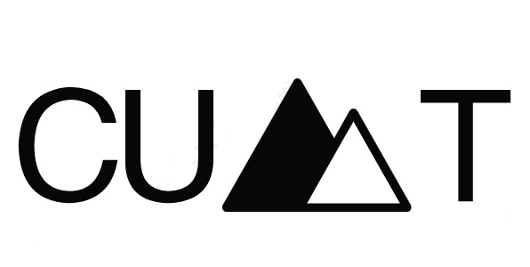

有史以来最强大的 MacBook Pro 就在这里。使
用速度极快的 M1 Pro 或 M1 Max 芯片——第
一款专为专业人士设计的 Apple 芯片——您可以
获得突破性的性能和惊人的电池续航时间。再加上
令人惊叹的 Liquid Retina XDR 显示屏、Mac 笔
记本电脑中最好的摄像头和音频，以及您需要的所
有端口。
点此了解详情
M1 Pro 将 M1 架构的卓越性能提升到专业
用户的全新水平。使用多达 10 个 CPU 内核、
多达 16 个 GPU 内核、一个 16 核神经引擎
以及支持 H.264、HEVC 和 ProRes 编解码器
的专用编码和解码媒体引擎，即使是最雄心勃
勃的项目也能轻松处理。